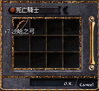
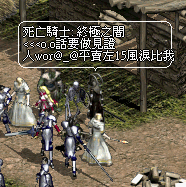
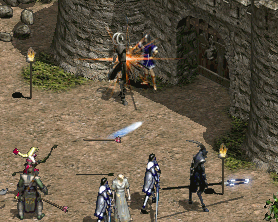

2002年11月8日


香港太陽神終於出現沙哈之弓了！在更新後沙哈之弓附加額外傷害點數+4及攻擊成功+2的效果，而且在沒箭的情況下更可以射出魔法箭！經初步測試後，我們發覺魔法箭的強度與米箭的強度一樣，24敏（6點傷害修正）Lv48（4點傷害修正）妖精使用+7（7點傷害修正）沙哈之弓（4點傷害修正）時用魔法箭與米箭一樣都可以打出22-31傷害值。
Copyright(C)1998-2003 Gabriel Leung. All Rights Reserved.